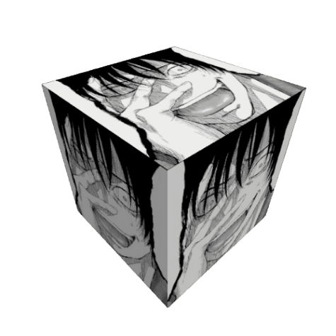
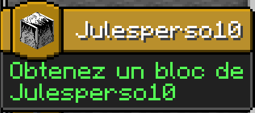

Fiche d'Identité
Pseudo Minecraft : julesperso10
Pseudo Discord : moirans38430
Rôle spécifique : Non
Team : DJCreeper
Crafting
 |
 |
|
Résultat :

Ce bloc est trouvable dans l'overworld naturellement entre la couche -64 et 64 avec une chance de 1/chunck et 1/filons.
Achivement :
Historique de Version
- 1.0 : Bloc et craft rajouter au jeu.
- 3.0 : Achivement ajouté au jeu.